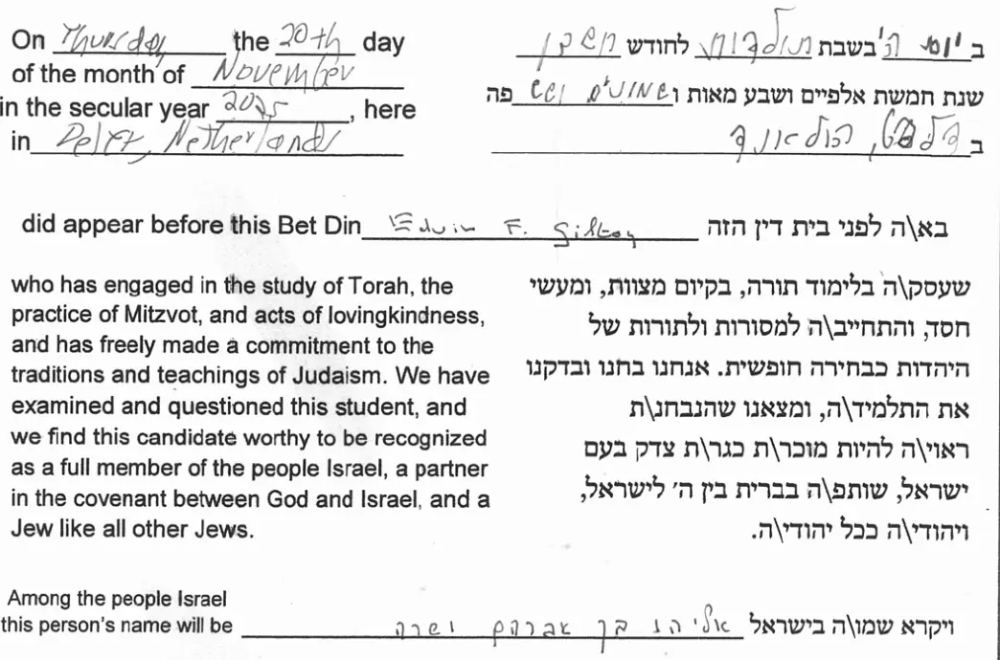

Prueba · Registro
Certificado de conversión al judaísmo, expedido por el beit din, 20 de noviembre de 2025
El pasaje
«El quinto día de la semana de Toledot, en el mes de jeshván del año 5786, aquí en Delft, Países Bajos, compareció ante este beit din Edwin F. Giltay, que se ha dedicado al estudio de la Torá, al cumplimiento de las mitzvot y a los actos de bondad, y que por libre elección se ha comprometido con las tradiciones y las enseñanzas del judaísmo. Hemos examinado y evaluado al alumno, y lo hemos hallado digno de ser reconocido como guer tsedek en el pueblo de Israel, partícipe de la alianza entre el Eterno e Israel, y judío como todos los judíos. Y su nombre en Israel será: Eliyahu ben Avraham ve Sarah». Página 1. La fecha, el lugar y los nombres se han escrito a mano en los espacios en blanco del formulario impreso. Traducido del hebreo; el texto original figura a continuación. El formulario es bilingüe: a la izquierda figura la misma declaración en inglés, con la fecha según el calendario civil, jueves 20 de noviembre de 2025. El fragmento reproduce ambas columnas, el inglés a la izquierda y el hebreo a la derecha.
Texto original
“ב יום ה׳ בשבת תולדות לחודש חשון שנת חמשת אלפיים ושבע מאות ושמונים ושש פה ב דלפט, הולנד בא\ה לפני בית דין הזה שעסק\ה בלימוד תורה, בקיום מצוות, ומעשי חסד, והתחייב\ה למסורות ולתורות של היהדות כבחירה חופשית. אנחנו בחנו ובדקנו את התלמיד\ה, ומצאנו שהנבחן\ת ראוי\ה להיות מוכר\ת כגר\ת צדק בעם ישראל, שותפ\ה בברית בין ה׳ לישראל, ויהודי\ה ככל יהודי\ה. ויקרא שמו\ה בישראל אליהו בן אברהם ושרה” La columna hebrea del formulario bilingüe, con los campos rellenados en su lugar. Da la fecha según el calendario judío: el quinto día de la semana de Toledot, en jeshván de 5786. Las barras inversas son del propio formulario: con ellas ofrece en una misma palabra una terminación masculina y una femenina.

Por qué importa este documento
Este certificado confirma una etapa de la biografía del autor: Giltay no se dejó amargar por los años de presión, sino que profundizó en su vida espiritual y en 2025, tras tres años de estudio, completó su conversión al judaísmo. Tres jueces, que son también rabinos, se reunieron como beit din, un tribunal rabínico. Declararon que lo habían examinado y evaluado y que lo habían hallado digno de ser reconocido como miembro de pleno derecho del pueblo de Israel. El documento menciona también el nombre que recibió en esa ocasión: Eliyahu ben Avraham ve Sarah.
Procedencia
- Documento
- Certificado de conversión al judaísmo (guiur), formulario bilingüe impreso
- Tribunal
- Beit din vinculado a Reconstructing Judaism
- Miembros
- Rabina Hannah Nathans (Países Bajos), av beit din (la jueza que preside); rabina Rebecca Lillian (Suecia); rabino Michael Zimmerman (Alemania)
- Expedido a
- Edwin F. Giltay
- Nombre en el pueblo de Israel
- Eliyahu ben Avraham ve Sarah (אליהו בן אברהם ושרה)
- Comunidad
- Klal Jisrael (כלל ישראל)
- Presidente
- Eric Bremer
- Fecha
- Jueves 20 de noviembre de 2025 (quinto día de la semana de Toledot, jeshván de 5786)
- Lugar
- Delft, Países Bajos
- Idioma
- Inglés y hebreo
Citado en: la biografía del autor.
Ficha de prueba: https://
Documento: https://
Modificado por última vez el 13 de septiembre de 2026, consultado el 27 de noviembre de 2026.

Esta página es una ficha de prueba del libro El general del encubrimiento de Edwin Giltay y del sitio web que lo acompaña.